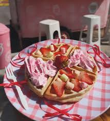

Cara Membuat
1.campurkan tepung, kuning telur, gula (30 gr),susu uht dan mentega cair.Aduk hingga merata dan tidak bergerigil.
2.Mixer putih telur,ctt dan gula samai softpeak
3.Campur adonan putih telur ke adonn tepung.Aduk hingga merata dan jangan kelamanan ya
4.panggang di teflon
5.setelah matang simpan di piring, lalu simpan eskrim di atas waffle tuangkan skm dan masukan starwberry
